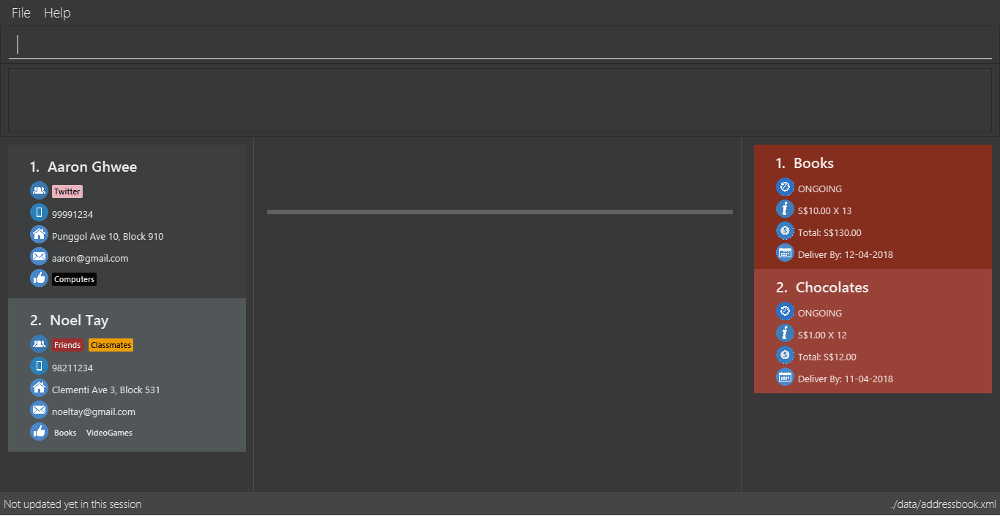

By: Team W13-B1 Since: Mar 2018 Licence: MIT
- 1. Introduction
- 2. Quick Start
- 3. Using ContactSails
- 4. Features
- 4.1. Viewing help :
help - 4.2. Managing Persons
- 4.3. Finding Persons
- 4.4. Managing Groups and Preferences
- 4.5. Managing Orders
- 4.6. Viewing the Calendar
- 4.6.1. Displaying the calendar :
calendarsince v1.3 - 4.6.2. Go to next page in the calendar :
calendarnextsince v1.5rc - 4.6.3. Go to previous page in the calendar :
calendarbacksince v1.5rc - 4.6.4. Display current day in the calendar :
calendartodaysince v1.5rc - 4.6.5. Display given date in the calendar :
calendarjumpsince v1.5
- 4.6.1. Displaying the calendar :
- 4.7. Managing Calendar Entries
- 4.7.1. Adding entries to calendar entry list :
entryaddsince v1.3 - 4.7.2. Editing entries in calendar entry list :
entryeditsince v1.5rc - 4.7.3. Deleting entries in calendar entry list :
entrydeletesince v1.4 - 4.7.4. Listing all calendar entries :
entrylistsince v1.4 - 4.7.5. Clearing all entries in list of entries :
entryclearsince v1.5
- 4.7.1. Adding entries to calendar entry list :
- 4.8. Miscellaneous Commands
- 4.1. Viewing help :
- 5. FAQ
- 6. Command Summary
- 7. Coming in v2.0
- 8. Glossary
1. Introduction
ContactSails is for salespersons who prefer to use a desktop app for managing contacts, orders, and events.
More importantly, it is optimized for those who prefer to work with a Command Line Interface (CLI), while still having the benefits of a Graphical User Interface (GUI).
If you can type fast, ContactSails can get your sales management related tasks done faster than traditional GUI apps.
2. Quick Start
Before you start, ensure you have Java version 1.8.0_60 or later installed in your computer.
| This app will not work with earlier versions of Java 8, so make sure you have installed the right version. |
To install and start using ContactSails, do the following:
-
Download the latest
ContactSails.jarhere. -
Copy the file to the folder you want to use as the home folder for ContactSails.
-
Double-click the file to start the app. The User Interface (UI) should appear in a few seconds, as shown in Figure 1 below. You can resize the application window as required by dragging the corners of the window.
Figure 1. ContactSails Application UI Interface -
Type a command in the command box (located right below Menu Bar) and press Enter to execute it.
e.g. typinghelpand pressing Enter will open the help window.-
Some example commands you can try:
-
list: lists all contacts -
addn/John Doe p/98765432 e/johnd@example.com a/John street, block 123, #01-01: adds a contact namedJohn Doeto ContactSails. -
delete3: deletes the 3rd contact shown in the current list -
calendar month: displays the calendar at the center of ContactSails -
exit: exits the app
-
-
Commands also have alias words so you can execute the same commands in a quicker way.
-
Some example command aliases you can try:
-
list: lists all contacts -
add n/John Doe p/98765432 e/johnd@example.com a/John street, block 123, #01-01: adds a contact namedJohn Doeto the Address Book. -
delete 3: deletes the 3rd contact shown in the current list-
cal month: displays the calendar at the center of ContactSails
-
-
exit: exits the app
-
-
Refer to Section 4, “Features” for details of each command.
3. Using ContactSails
This section first describes the various components of ContactSails' User Interface and later explains some guidelines you will need to follow to execute commands.
3.1. ContactSails User Interface
This section briefly explains the various panels in the UI interface of ContactSails.
With reference to Figure 2 above, there are 5 important sections in the interface:
-
Command Box: This is the place for you to type your commands. Pressing Enter will execute the command.
-
Result Display: This place shows the result of the command you have executed. It will display messages indicating whether your command has executed successfully. If your command fails to execute, error messages indicating the cause of the failure will be shown here.
-
Person List Panel: This panel displays the list of persons that exist in ContactSails. You can filter this list of persons with
findcommands. -
Center Panel: This panel can display either a detailed display of a person’s information, or a calendar.
calendarcommand will display the calendar andselectcommand will display selected person’s information. -
Right Panel: This panel can display either a list of orders or a list of calendar entries in ContactSails. On startup, this panel will show the list of orders by default. You can use
entrylistandorderlistto switch between the two lists.
Person List Panel, Center Panel and Right Panel will be explained in greater detail in Section 4, “Features”.
3.2. Command Format Guidelines
Here are some guidelines you will have to take note of to execute commands in ContactSails:
-
Command words are case sensitive.
-
Typing
helpwill execute the help command. -
Typing
Help, orHELPwill not execute the help command.
-
-
Words in
UPPER_CASEare the parameters to be supplied by the user.-
For example, in
add n/NAME,NAMEis a parameter which can be used asadd n/John Doe.
-
-
Items in square brackets are optional.
-
For example,
n/NAME [g/GROUP]can be used asn/John Doe g/friendor simply asn/John Doe.
-
-
Items with
…after them can be used multiple times. They can be omitted as well i.e. used 0 times.-
For example,
[g/GROUP]…can be used as' '(i.e. 0 times), asg/friend, or asg/friend g/family, etc.
-
-
Parameters can be in any order.
-
For example, if the command format specifies
n/NAME p/PHONE_NUMBER, enteringp/PHONE_NUMBER n/NAMEinstead will also be acceptable.
-
|
ContactSails will automatically complete the command you want to enter if you press the Tab key. For example, typing ad in the command box and then pressing Tab will automatically fill add n/NAME p/PHONE_NUMBER e/EMAIL a/ADDRESS [g/GROUP]…[pr/PREFERENCE] in the command box.
|
4. Features
This section describes each command in ContactSails in detail.
4.2. Managing Persons
This section describes commands you can use to manage person entries in ContactSails. The figure below shows how ContactSails look currently.

4.2.1. Adding a person : add
Description: Adds a person to ContactSails.
Command Alias: a
| A person can have any number of groups and preferences (including 0) |
Examples:
-
add n/John Doe p/98765432 e/johnd@example.com a/John street, block 123, #01-01 pr/notebooksOR
a n/John Doe p/98765432 e/johnd@example.com a/John street, block 123, #01-01 pr/notebooks
Adds a contactJohn Doe, with98765432as phone number,johnd@example.comas email,John street, block 123, #01-01as address, andnotebooksas a preference tag.

4.2.2. Editing a person : edit
Description: Edits an existing person in ContactSails.
Command Alias: e
Here’s a picture of current ContactSails
Example:
-
edit 2 n/Betsy Crower g/OR
e 2 n/Betsy Crower g/
Edits the name of the 2nd person to beBetsy Crowerand clears all existing groups.

4.2.3. Deleting a person : delete
Description: Deletes the specified person from ContactSails.
Command Alias: d
Examples:
-
list
delete 2ORd 2
Deletes the 2nd person in ContactSails. -
find Betsy
delete 1ORd 1
Deletes the 1st person in the results of thefindcommand.
4.2.4. Listing all persons : list
Description: Shows a list of all persons in ContactSails.
Command Alias: l
4.2.5. Selecting a person : select
Description: Selects the person identified by the index number used in the last person listing.
Command Alias: s
Examples:
-
list
select 2ORs 2
Selects the 2nd person in ContactSails. -
find Betsy
select 1ORs 1
Selects the 1st person in the results of thefindcommand.
4.3. Finding Persons
This section describes commands you can use to find person entries using various query types in ContactSails. The Person List in the interface will only show the persons you are finding after executing the command.
4.3.1. Finding persons by name : find
Description: Finds persons whose names contain any of the given keywords.
Command Alias: f
Examples:
-
find JohnOR
f John
ReturnsjohnandJohn Doe -
find Betsy Tim JohnOR
f Betsy Tim John
Returns any person having namesBetsy,Tim, orJohn
4.3.2. Finding persons by groups : groupfind since v1.2
Description: Finds persons whose groups matches any of the given keywords.
Command Alias: gf
Examples:
-
groupfind friendsOR
gf friends
ReturnsJohn Doe -
groupfind neighbours friends colleaguesOR
gf neighbours friends colleagues
Returns any person having groupsneighbours,friends, orcolleagues
4.3.3. Finding persons by preferences : preffind since v1.2
Description: Finds persons whose preferences matches any of the given keywords.
Command Alias: pf
Examples:
-
preffind computersOR
pf computers
ReturnsJohn Doe -
preffind computers shoes necklacesOR
pf computers shoes necklaces
Returns any person having preferencescomputers,shoes, ornecklaces
4.4. Managing Groups and Preferences
This section describes commands you can use to manage preference and group tags in ContactSails.
4.4.1. Deleting a group : groupdelete since v1.2
Description: Deletes the specified group from ContactSails.
Command Alias: gd
Examples:
Here’s a picture of the contacts in ContactSails.

-
groupdelete friendsORgd friends -
groupdelete friendsOR
gd friends
All persons in ContactSails with the group friends will have the group removed.
At first, it will show the following, where the group friends still appear at the person panel.

Now, click on another contact. Then, click back 1. Alex Yeoh to see the change.

4.4.2. Deleting a preference : prefdelete since v1.2
Description: Deletes the specified preference from ContactSails.
Command Alias: pd
Examples:
Here’s a picture of the contacts in ContactSails.
-
prefdelete shoesORpd shoes. All persons in ContactSails with the preference [shoes] will have the preference removed.
At first, it will show the following, where the preference shoes still appear at the person panel.
Now, click on another contact. Then, click back 2. Bernice Yu to see the change.
-
prefdelete computersOR
pd computers
All persons in ContactSails with the preferencecomputerswill have the preference removed.
4.5. Managing Orders
This section describes commands you can use to manage order entries in ContactSails. The figure below shows how ContactSails looks currently.
4.5.1. Adding an order : orderadd since v1.2
Description: Adds an order to the person specified by the index number used in the last person listing.
Command Alias: oa
Examples:
-
orderadd 2 i/NBA 2k18 pr/59.99 q/1 d/14-04-2018OR
orderadd 2 i/NBA 2k18 pr/59.99 q/1 d/14-04-2018
Adds theNBA 2k18order toNoel Tay, the 2nd person, as shown in the figure below.

4.5.2. Editing an order : orderedit since v1.2
Description: Edits the order specified by the index number used in the order listing.
Command Alias: oe
Examples:
ContactSails currently has the following order:

To edit the order above, execute the following command:
-
orderedit 1 pr/12.50 q/5OR
oe 1 pr/12.50 q/5
Edits the price and quantity fields ofBooks, the 1st order, to be12.50and5respectively. The result is shown in the figure below.

4.5.3. Changing the order status : orderstatus since v1.4
Description: Changes the order status of the order specified by the index number used in the order listing.
Command Alias: os
Examples:
-
orderstatus 1 os/doneOR
os 1 os/doneMarks the order status ofBooks, the 1st order in the order list asdone. The figure below shows how the UI updates after executing the command above.

4.5.4. Deleting an order : orderdelete since v1.2
Description: Deletes the order specified by the index number used in the order listing.
Command Alias: od
Examples:
The figure below shows the current order list in the application:

-
orderdelete 1OR
od 1
DeletesBooks, the 1st order in the order list from ContactSails.

4.5.5. Listing all orders : orderlist since v1.4
Description: Shows a list of all orders in ContactSails.
Command Alias: ol
4.6. Viewing the Calendar
This section describes commands related to viewing the calendar in ContactSails. The calendar is displayed at the CenterPanel of the interface when you enter any of the commands in this section. Figure 3 below shows how the calendar looks like.

In Figure 3, the calendar is set to Day-view, hence it displays all calendar entries that occur in the displayed date (11 April 2018, Wednesday).
In the calendar, calendar entries appears as colored blocks, such as the green block in Figure 3, indicating the title and starting time of the entry.
You can change the viewing format of the calendar using calendar command to switch to either of the 3 views; Day-view, Week-view and Month-view.
To change the displayed date, you can enter calendarjump command to view your desired date.
4.6.1. Displaying the calendar : calendar since v1.3
Description: Displays the calendar in the Center Panel in specified viewing format.
Command Alias: cal
Example:
To set display of calendar to Month-view, execute the following command:
-
calendar monthOR
cal month
Shows calendar in Month-view as seen in the figure below.

4.6.2. Go to next page in the calendar : calendarnext since v1.5rc
Description: Displays next page of current displayed date in calendar.
Command Alias: calnext
4.6.3. Go to previous page in the calendar : calendarback since v1.5rc
Description: Displays previous page of current displayed date in calendar.
Command Alias: calback
4.6.4. Display current day in the calendar : calendartoday since v1.5rc
Description: Displays today’s date in the calendar.
Command Alias: caltoday
4.6.5. Display given date in the calendar : calendarjump since v1.5
Description: Displays the given date in calendar.
Command Alias: caljump
4.7. Managing Calendar Entries
This section describes commands you can use to manage calendar entries in ContactSails.
You can use calendar entries to represent events, deadlines or meetings.
A calendar entry has a title, start date, end date, start time and end time. These entries will be displayed in the calendar in the Center Panel and calendar entry list in the Right Panel. Figure 5 below shows how a calendar entry appears in the calendar entry list.

In Figure 5, calendar entry has an index of 1, indicating its position in the list. Beside the index is the title of the calendar entry (Meet Aaron). The description indicates the entry’s starting date (11-04-2018) and ending date (11-04-2018). The last sentence indicates the starting time (14:00) and ending time. (17:00) of the entry.
4.7.1. Adding entries to calendar entry list : entryadd since v1.3
Description: Adds an entry to the calendar entry list and displays it in the calendar.
Command Alias: ea
Example:
-
entryadd t/meet with boss ed/05-05-2020 st/10:00 et/12:00OR
ea t/meet with boss ed/05-05-2020 st/10:00 et/12:00
Creates a calendar entry with listed title, starts from 1000 and ends at 1200 on 5 May 2020.
4.7.2. Editing entries in calendar entry list : entryedit since v1.5rc
Description: Edits an existing entry in the calendar entry list and displays the edited entry in the calendar.
Command Alias: ee
Example:
The calendar entry list currently has the following calendar entry at index 1:

To edit the above calendar entry, execute the following command:
-
entryedit 1 t/Meeting with Bosses et/14:00OR
ee 1 t/meet with bosses et/1400
Edits title and end time of 1st entry in entry list to "Meeting with Bosses" and 1400 respectively. The result is shown in the figure below.+
4.7.3. Deleting entries in calendar entry list : entrydelete since v1.4
Description: Deletes an existing entry in Calendar entry list.
Command Alias: ed
Example:
-
entrydelete 1OR
ed 1
Deletes the entry at index 1 of most recent entry listing.
Entry is removed from the calendar.
4.7.4. Listing all calendar entries : entrylist since v1.4
Description: Shows a list of all calendar entries in ContactSails.
Command Alias: el
4.7.5. Clearing all entries in list of entries : entryclear since v1.5
Description: Clears all entry list entries from ContactSails.
Command Alias: ec
4.8. Miscellaneous Commands
This section describes other commands you can use in ContactSails.
4.8.1. Viewing command history : history
Description: Lists all the commands that you have entered in reverse chronological order.
Command Alias: h
|
Pressing the Up and Down arrows will display the previous and next input respectively in the command box. |
4.8.2. Changing the theme : theme since v1.3
Description: Changes the theme of the application.
Command Alias: t
Examples:
-
theme lightOR
t light
Changes the theme of the application to the light theme. The figure below shows the ContactSails UI with the light theme.
4.8.3. Undoing previous command : undo
Description: Restores ContactSails to the state before the previous undoable command was executed.
Command Alias: u
|
Undoable commands: These are commands that modify ContactSails’s state ( |
Examples:
-
delete 1
list
undoORu(reverses thedelete 1command) -
select 1
list
undoORu
Theundocommand fails as there are no undoable commands executed previously. -
delete 1
clear
undoORu(reverses theclearcommand)
undoORu(reverses thedelete 1command)
4.8.4. Redoing the previously undone command : redo
Description: Reverses the most recent undoable command.
Command Alias: r
Examples:
-
delete 1
undo(reverses thedelete 1command)
redoORr(reapplies thedelete 1command) -
delete 1
redoORr
Theredocommand fails as there are noundocommands executed previously. -
delete 1
clear
undo(reverses theclearcommand)
undo(reverses thedelete 1command)
redoORr(reapplies thedelete 1command)
redoORr(reapplies theclearcommand)
4.8.5. Clearing all entries : clear
Description: Clears all entries from ContactSails.
Command Alias: c
4.8.6. Saving the data
Data in ContactSails is saved in the hard disk automatically after you execute any command that changes the data.
There is no need to save the data manually.
5. FAQ
Q: I can’t open the ContactSails .jar file. What should I do?
A: Given below are steps you can follow to solve this problem:
For Windows Users:
-
Open the
Command Promptapplication. -
Change the current directory to the directory of your
Java JDK. -
Execute the command
"JAVA_JDK_EXE_FILE_DIRECTORY_PATH" -jar YOUR_APPLICATION_JAR_FILE_NAME.jar.-
For example, if your
Java JDKis in the"C:\Program Files\Java\jdk1.8.0_102\bin\javaw.exe"directory, you would execute the following command:"C:\Program Files\Java\jdk1.8.0_102\bin\javaw.exe" -jar ContactSails.jar.
-
For Mac/Linux users:
-
Open the
Terminalapplication. -
Execute the command
java -jar YOUR_APPLICATION_JAR_FILE_NAME.jar
Q: Why is it that an error shows up when I clicked the interface of the calendar twice, as seen in Figure ? below?
A: As of V1.5, we have disabled the ability for users to add entries by clicking on the calendar twice, as entries created this way will not be saved in ContactSails. This ability will be enabled in future versions of ContactSails.
Q: How do I transfer my data to another computer?
A: Install the app in the other computer and overwrite the empty data file it creates with the file that contains the data of your previous ContactSails folder.
6. Command Summary
The following sections summarize the commands you can use in ContactSails.
6.1. Managing Persons
| Function | Command | Alias | Example |
|---|---|---|---|
Add a person. |
|
|
|
Edit an existing person. |
|
|
|
Delete an existing person. |
|
|
|
Show a list of all persons. |
|
|
|
Select a person. |
|
|
|
6.2. Finding Persons
| Function | Command | Alias | Example |
|---|---|---|---|
Find persons by name. |
|
|
|
Find persons by group. |
|
|
|
Finds persons by preference. |
|
|
|
6.3. Managing Groups and Preferences
| Function | Command | Alias | Example |
|---|---|---|---|
Delete a group. |
|
|
|
Delete a preference. |
|
|
|
6.4. Managing Orders
| Function | Command | Alias | Example |
|---|---|---|---|
Add an order. |
|
|
|
Edit an existing order. |
|
|
|
Change status of existing order. |
|
|
|
Delete an existing order. |
|
|
|
6.5. Viewing Calendar
| Function | Command | Alias | Example |
|---|---|---|---|
Display the calendar. |
|
|
|
Go to the next page of the calendar. |
|
|
|
Go to the previous page of the calendar. |
|
|
|
Go to the current day. |
|
|
|
Go to specified date. |
|
|
|
6.6. Managing Calendar Entries
| Function | Command | Alias | Example |
|---|---|---|---|
Add a calendar entry. |
|
|
|
Edit an existing calendar entry. |
|
|
|
Delete an existing calendar entry. |
|
|
|
List all calendar entries. |
|
|
|
Clear all calendar entries. |
|
|
|
6.7. Miscellaneous Commands
| Function | Command | Alias | Example |
|---|---|---|---|
View command history. |
|
|
|
Change theme. |
|
|
|
Undo previous command. |
|
|
|
Redo previous command. |
|
|
|
Clear all data. |
|
|
|
Exit ContactSails. |
|
|
|
7. Coming in v2.0
The following section describes some of the proposed features we are planning to add to ContactSails in v2.0.
7.1. Viewing Customer Statistics
One of the features we are planning to add in ContactSails v2.0 is the ability to view relevant statistics regarding your customers and sales orders.
The command descriptions for these features are given below.
7.1.1. Viewing top customers : topcustomers coming in v2.0
Description: Displays a list of the top customers based on the frequency their contacts are accessed.
Command Alias: tc
Examples:
-
topcustomers 10OR
tc 10
Displays the list of the top ten persons in ContactSails based on how frequently you access these contacts.
7.1.2. Viewing top customers : topitems coming in v2.0
Description: Displays a list of the top items based on amount of items that have been sold to customers.
Command Alias: ti
Examples:
-
topitems 10OR
ti 10
Displays the list of the top ten items in ContactSails based on how many of the items have been sold.
7.2. Sending Promotions
Another proposed feature we are planning to implement is the ability to send promotions to multiple customers based on their groups or preferences. The command descriptions for these features are given below.
7.2.1. Sending promotions based on group : sendpromogroup coming in v2.0
Description: Opens a promotion email draft in the browser, which can be sent to multiple persons having the same group tags.
Command Alias: spg
Examples:
-
sendpromogroup friends sub/New Offer on SunglassesOR
spg friends sub/New Offer on Sunglasses
Opens an email draft in the browser with recipients as all persons tagged as 'friends' and subject as 'New Offer on Sunglasses'.
7.2.2. Sending promotions based on preference : sendpromopref coming in v2.0
Description: Opens a promotion email draft in the browser, which can be sent to multiple persons having the same preference tags.
Command Alias: spp
Examples:
-
sendpromopref books sub/Books on SALEOR
spp books sub/Books on SALE
Opens an email draft in the browser with recipients as all persons tagged with 'books' and subject as 'Books on SALE'.
8. Glossary
- Command Line Interface
-
A command line interface (or CLI) is an application interface where one issues commands to the application in the form of successive lines of text.
- Graphical User Interface
-
A graphical user interface (or GUI) is an application interface where one interacts with the application in a visual manner i.e. using icons, menus, or windows.
- Session
-
Each usage session begins when you open ContactSails and ends when you close it.
- Tag
-
A field that you can add to a person’s contact to represent additional details about that person.
- Group
-
A Tag to represent the group of persons a person can be in. For example, group tags can be tags like
friends,colleagues,twitter, etc. - Preference
-
A Tag to represent what items the person is interested in. For example, preference tags can be tags like
shoes,videogames, etc. - Order
-
An Order represents a sales order you might want to keep track of by adding it into ContactSails. It has fields for item description, price, quantity, and delivery date.
- Entry
-
An Entry represents a calendar event that you can add to the integrated calendar in ContactSails to keep track of your deadlines.
- Panel
-
An area in the ContactSails UI that displays all related information in a single place. Different panels have different data to display.
- PersonPanel
-
A Panel that displays the contact details related to a single person that has been selected.
- CalendarPanel
-
A Panel that displays the integrated calendar in ContactSails. You can view all your calendar entries in a graphical manner using this panel.
- OrderListPanel
-
A Panel that displays all sales orders that you have added to ContactSails.
- EntryListPanel
-
A Panel that displays all the calendar entries that you have added to ContactSails.
- Alphanumeric
-
The parameter can only contain alphabets and/or numbers.